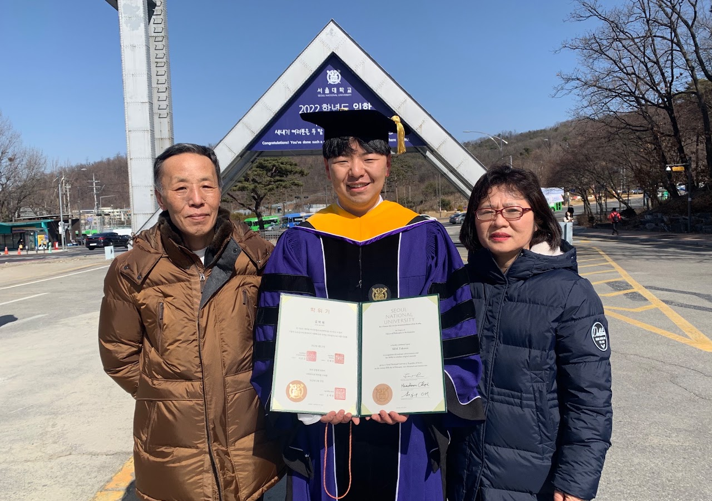
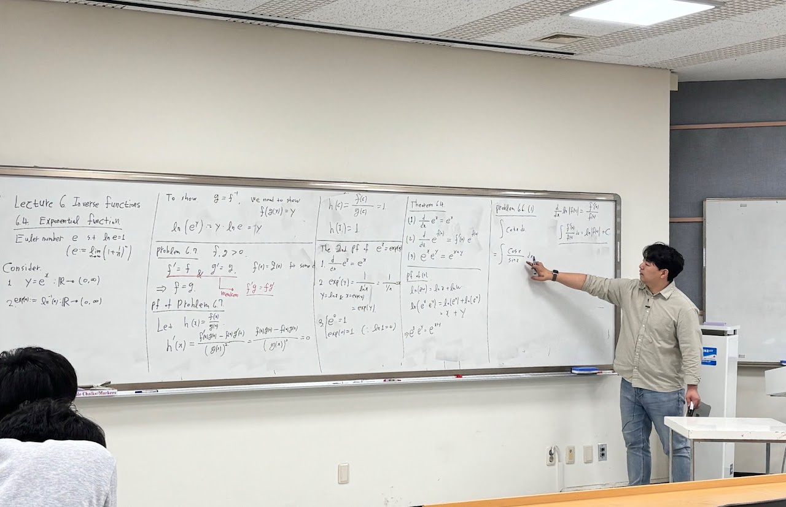
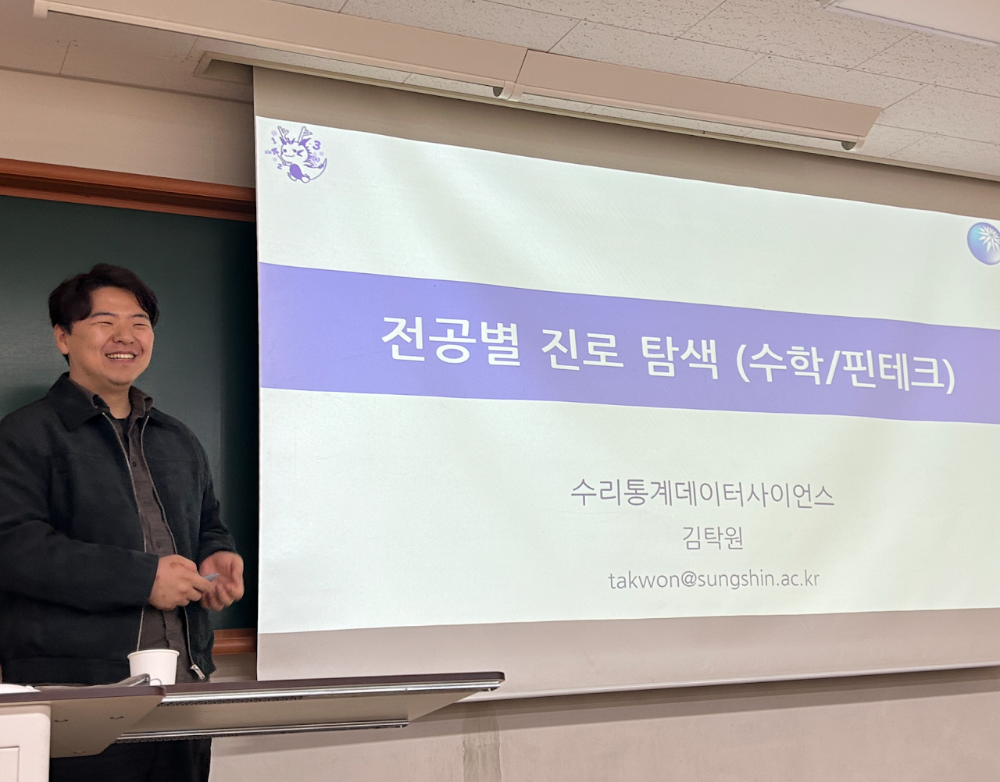
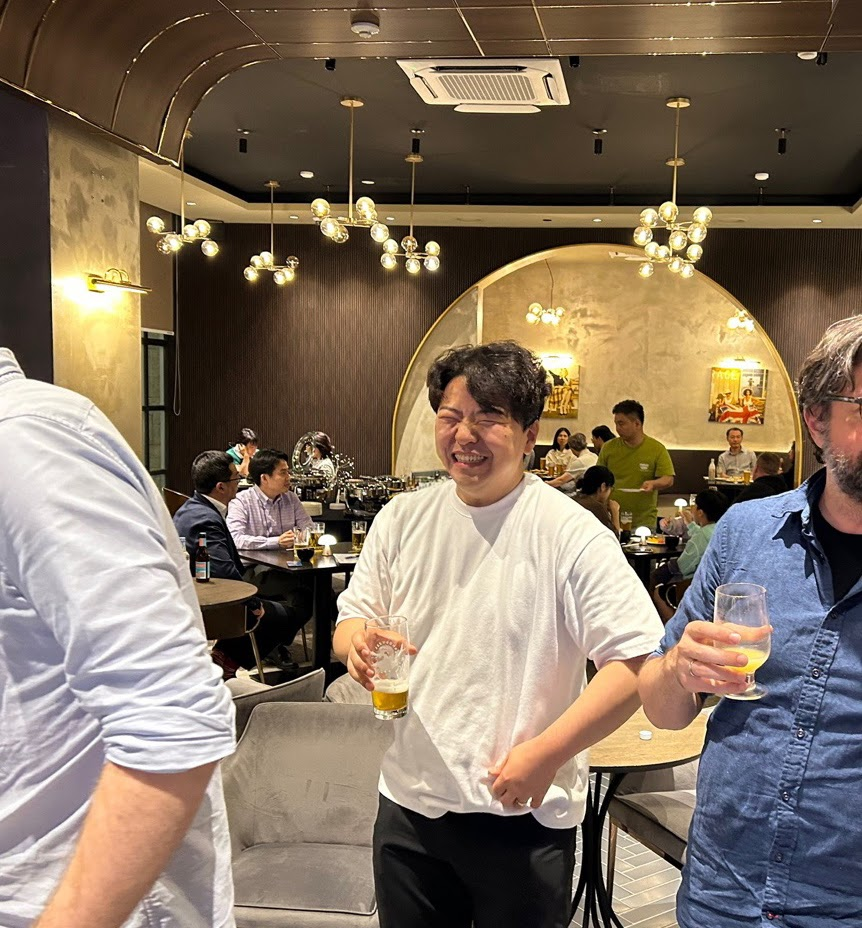
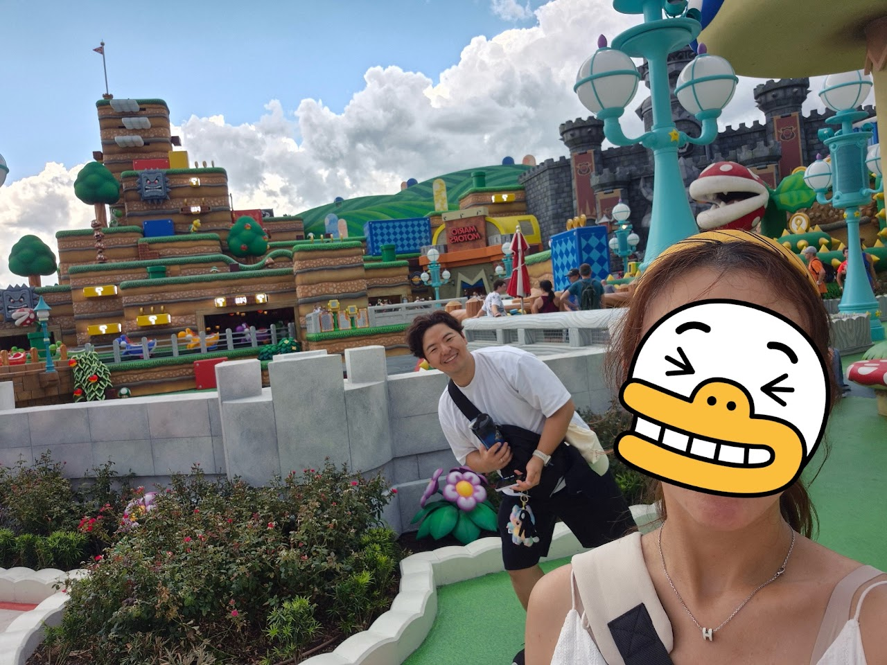
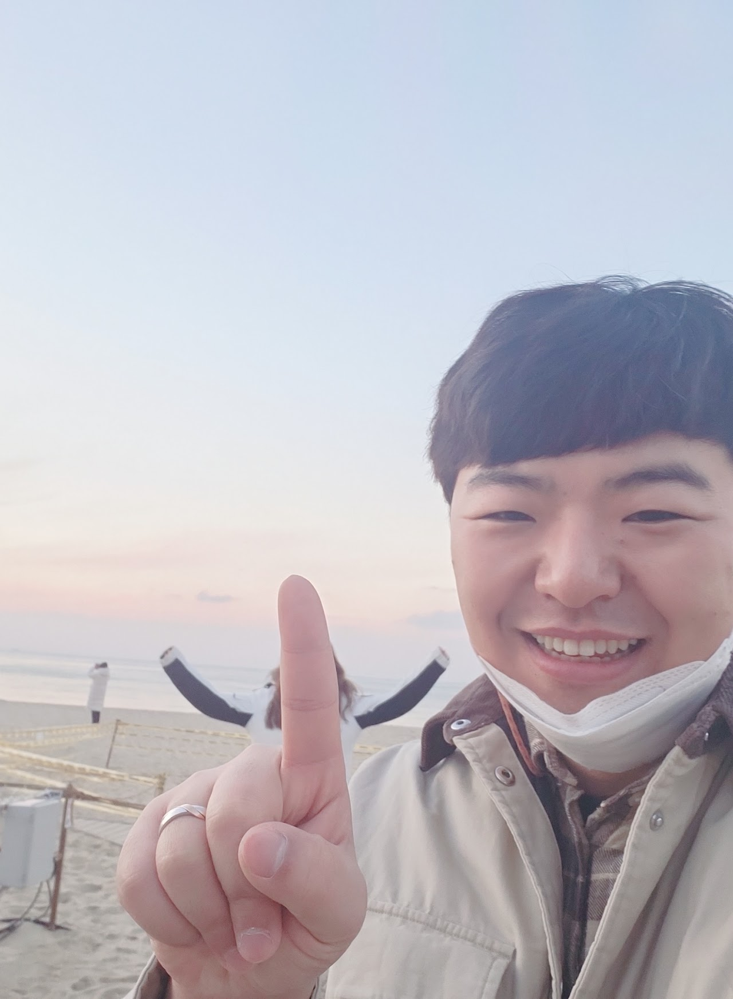
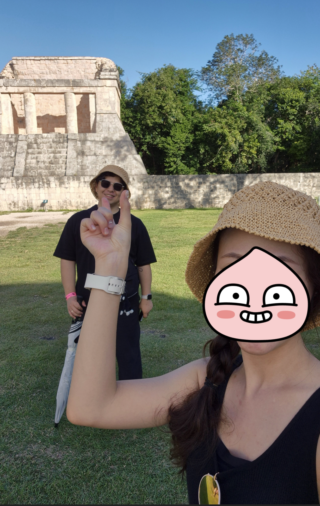

About
Employment, education, fellowships, and grants.
Employment
- Assistant Professor, School of Mathematics, Statistics and Data Science, Sungshin Women's University, 2024.9–Present
- Research Assistant Professor, Stochastic Analysis and Application Research Center, KAIST, 2024.2–2024.08
- Postdoctoral Fellow, Research Institute of Mathematics, Seoul National University, 2022.3–2024.2
Education
- Ph. D. in Mathematics, Seoul National University, 2015.3 - 2022.2 (Advisor: Ki-Ahm Lee)
- B.S. in Mathematics, Seoul National University, 2009.3 - 2015.2 (Minor: Financial Economics, Financial Mathematics)
Fellowships & grants
- Start-Up Research Grant, Sungshin Women's University (H20250024), March 2025–February 2026
- Sejong Science Fellowship, National Research Foundation of Korea (RS-2024-00351151), May 2024–April 2029
- Fellowship for Fundamental Academic Fields, Seoul National University, March 2017–February 2018
Photos






